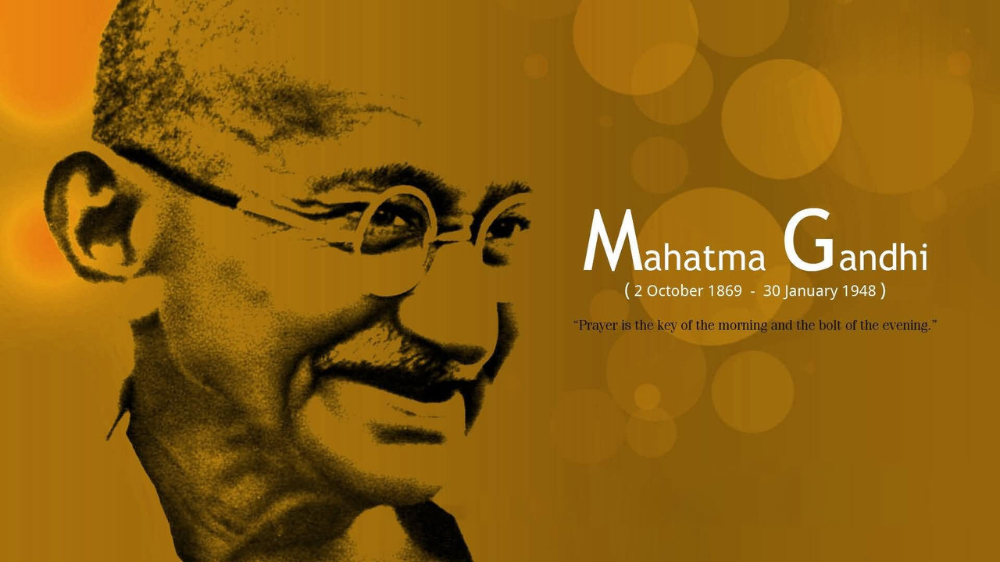
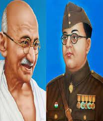
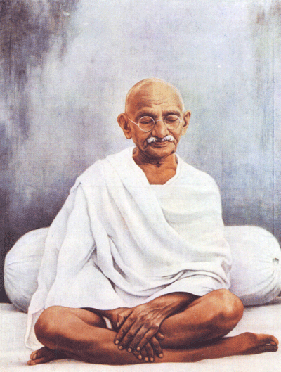
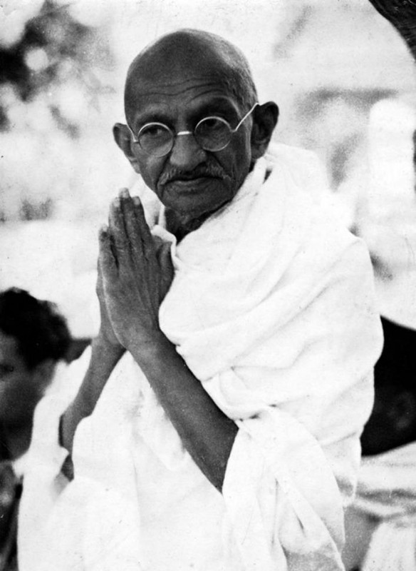

Mahatma Gandhi
• Mohan Das Karam Chand Gandhi •

Mahatma Gandhi
The man who united people
The man who united people Mahatma Gandhi was the primary leader
India's independance movement and also the
architect of a form of non-violent civil disobidience that
would influence the world.
Gandhi's commitment to non-violence and his belief in simple
living -making his own clothes, eating a vegetarian
diet and using fasts for self-purification as well as
a means of protest - have been a beacon of hope for oppressed
and
marginalized people throughtout the world.
Father of the Nation

Indians widely describe
Gandhi as the father
of the nation.
The title "The Father of the Nation"
for Gandhi
is not an official title and has not been officially accorded by Goverment of India.
Origin of this title is traced back to a radio
address
(on Singapore radio) on 6 July 1944
by Subhash Chandra Bose where Bose
addressed Gandhi as "The Father of the Nation".
on 28 April 1947,Sarojini Naidu during a conference also referred Gandhi as "Father of the Nation".
Peaceful All The way

Early on fron childhood he started a
vegetarian way of life.
Meditation and non-violence were his life arts.
later on in life he united people from
different religious together.
Great quote from Gandhi:
"An eye for an eye only ends up making the
whole
world blind."
Gandhi as a folk Hero

According to Aturly Murali,Indian congress in
the 1920s
appealed to Andhra pradesh
peasants by creating Telegu language plays
that combined Indian mythology and legends,
linked the, to
Gandhi's as messiah, a reincarnation of ancient and medieval Indian
nationalist leaders and saints.
The plays built support among peasants
steepde in tradional Hindu culture,
according to Murali, and this effort made
Gandhi a folk hero in Telegu speaking villages,
a sacred messiah-like figure.
Here's a time line of Mahatma Gandhi life :
- 1869-Born in Porbandar,Gujrat.
- 1921-Assuming leadership of the Indian National Congress in 1921,Gandhi led nationwide campaigns for
various social causes for achieving swaraj or elf-rule.
- 1930-Gandhi famously led Indians in challenging the British-imposed salt tax with the 400 kn (250 mi)
Dandi salt March
- 1940-Gandhi's vision of an independent india based on religion pluralism,however was challenged in the
early 1940s by a new Muslim nationalsim which was
demanding a separate Muslim homeland carved out of India.
- 1874-Left the Porbandar.
- 1883-In May 1883,the 13-year-old Mohandas was married to 14-year-old
Kastrurbau Makhanji Kapadia(her first name was usually shortened to "Kastruba", and affectionately to
"Ba")in an arranged marraige,according to the custom of the region at that time.
- 1885-Gandhi's father karamchand died.
- 1888-Born First Son Harilal Gandhi
- 1892-Born Second Son Manilal Gandhi
- 1897-Born Third Son Ramdas Gandhi
- 1900-Born Fourth Son Devdas Gandhi
- 1887-In November 1887,the 18-year-old Gandhi graduated from school in Ahmedabad.
- 1888-In January 1888,he enrolled at Samaldas College in Bhavnagar State,the the sole degree-granting
institution of higher education in the region
- 1893- In April 1893, Gandhi aged 23, set sail for South Africa to be the lawyer for Abdullah's cousin.He
spent 21 years in South Africa, where he developed his political views, ethics and politics.
- 1915- He took these back to India in 1915
- 1915–47- Struggle for Indian independence
- 1939- Gandhi and the Congress withdrew their support of the Raj when the Viceroy declared war on Germany
in September 1939 without consultation.
- 1918- In April 1918, during the latter part of World War I, the Viceroy invited Gandhi to a War
Conference in Delhi
- 1917- Gandhi's first major achievement came in 1917 with the Champaran agitation in Bihar.
- 1919-In 1919, Gandhi then aged 49, after the World War I was over, sought political co-operation from
Muslims in his fight against British imperialism by supporting the Ottoman Empire that had been defeated
in the World
- 1931- The government, represented by Lord Irwin, decided to negotiate with Gandhi. The Gandhi–Irwin
Pact was signed in March 1931.
- 1899- Gandhi participated in South African war against the Boers, on the British side in 1899.
- 2007- In 2007, the United Nations General Assembly declared Gandhi's birthday 2 October as "the
International Day of Nonviolence.
- 1930- Time magazine named Gandhi the Man of the Year in 1930
- 1948-Dies.
Further Detail
Coded by Snehal Auti